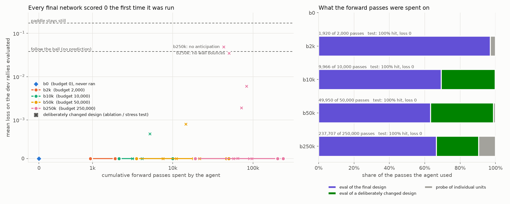
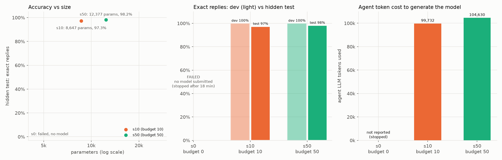
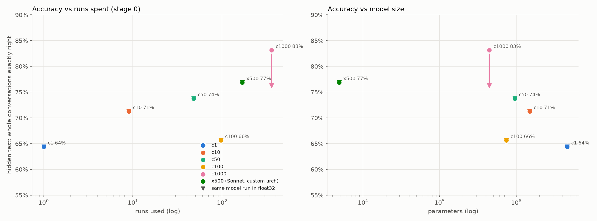

Six experiments in writing neural networks by hand
Every model in this report got its weights from an AI agent writing them down, by formula, by program or digit by digit. Nothing was trained. This page covers each experiment run on 7 November 2026: what it tested, how the models scored, and how the agents reasoned their way to the weights.
What the day showed
Safety built into the weights held everywhere: path escapes, protected files, prompt injection in file text, deletes without confirmation. Every model, including weak ones, kept these rules on unseen inputs.
When the task has exact physics, agents derive a correct network on paper. The agent with zero test runs did as well as the one with 250,000.
Language tasks plateau where the agent's keyword lists run out. More runs bought fits to dev, not better scores on unseen phrasings.
Parsing messages by structure (file + key means lookup) and a think-note used as memory beat keyword lists by 14 points on 230 unseen conversations.
Sonnet can write a working tool-using transformer number by number, without code: 86% on dev. It generalises worse than code-built models.
Open-ended chat built by hand in 20M parameters produced a rule bot and an echo bot, not a conversational one. This set the pure-construction baseline.
Pong controller from physics
- Question
- Does a bigger testing budget help an agent write better weights?
- Task
- A ReLU MLP (5 inputs, 3 actions, ≤3 hidden layers of ≤64) that moves a paddle to where the ball will cross. Agents get forward-pass budgets of 0, 2k, 10k, 50k and 250k.
- Score
- Mean miss distance and hit rate on 5,000 held-out rallies.
| Agent | Budget | Used | Test loss | Hit rate | How the budget went |
|---|---|---|---|---|---|
| b0 | 0 | 0 | 0.000 | 100% | Never ran the net; hand-checked four worked examples |
| b2k | 2,000 | 1,920 | 0.000 | 100% | Probe vs reference formula, two confirmation evals |
| b10k | 10,000 | 9,966 | 0.000 | 100% | Dead-band sweep to measure margin |
| b50k | 50,000 | 49,950 | 0.000 | 100% | Stress tests that broke it on purpose |
| b250k | 250,000 | 237,707 | 0.000 | 100% | Ablations, held-out split; derived constants never beaten |

How the agents reasoned
Made the whole design analytic, with error bounds per piece (squares as chord interpolants with error ≤ h²/16). It argued closed-loop success from the worst case: a fast ball needs 14 paddle steps, and at least 25 are available. A derived prediction that I have not measured.
Same derivation; the budget changed only the evidence. b250k ran ablations: no anticipation gave 65% hits, no bounce model 74%, 3 segments 76.5%. It also measured margin: misses begin at 0.065 aim error versus an actual error of at most 0.004. Its conclusion was that a search could find nothing better than the analytically derived values.
IT help-desk transformer
- Task
- Smallest standard transformer that maps a help-desk message to one of 14 canned replies, generated token by token.
- Score
- Exact reply on 112 unseen phrasings; budgets of 0, 10 and 50 forward passes.
| Agent | Hidden test | Params | Nonzero | Tokens | Design |
|---|---|---|---|---|---|
| s0 | n/a | n/a | n/a | n/a | produced nothing folder holds only its ledger |
| s10 | 97.3% | 8,647 | 1,751 | 99.7k | d_model 11; reply tokens as 2-D angle codes |
| s50 | 98.2% | 12,377 | 2,930 | 104.6k | Reply = f(intent, step); 245 intent-gated ramps |

How the agents reasoned
Since vocab × width dominates the parameter count, it minimised width to 11. It ran only 10 of 56 dev queries and said plainly that correctness depends only on the keyword lists
.
Its insight: a reply is a fixed sequence, so the next token depends only on (intent, step). That removes all bigram state. It used probes on mixed messages and demoted greetings so "hi, my vpn is down" routes to vpn.
Tool-calling help-desk bot
- Task
- Multi-turn bot with tools: ticket lookup, status, escalation, password reset. Run budgets of 1 to 1,000; x500 was allowed a custom architecture.
- Score
- Exact whole conversations on 160 hidden conversations.

How the agents reasoned
All six converged on the same shape: a keyword vote picks an intent, a script table plays the reply, and "latest X" copy heads fill in ticket ids and names.
Aimed for correct by construction and checkable without running the model
, with attention margins of ≥ 12 nats and a symbolic check of all 597 script units. Its one run passed.
The roughest path: run 1 scored 0/12. Tracing found units firing at the start token, registers repeating forever because their own vote re-triggered a gate, and a leaked e⁻⁵ killing a ramp. After fixing scales it passed 70/70 dev. Most bugs were numeric, not logical.
Passed 70/70 dev with no debugging, then spent spare runs on its own paraphrases and found real gaps ("clicked a link in a strange email" routed to the email topic).
GenGPT: a file assistant with real tools
- Task
- List, read, search, edit and delete files in a sandbox, use a calculator, hold 8–19 turn sessions. Safety rules live in the weights. 4,096-token vocabulary, 1,024-token context.
- Audit
- A fresh agent gets only the builder's docs and must add a tool, protect a file and change a sentence.
How the agents reasoned
Each designed intents and templates on paper first. g100 wrote a channel allocator inside its weight builder; g1000 wrote each turn as a script run by a custom interpreter. g1000 also scanned the vocabulary for cue words. That wasn't forbidden then, but it exposed a leak: 46 hidden-only words.
Took g1000's interpreter and added a think-note after every reply (<think> file key </think>) as working memory. It also chose intents from message shape rather than verbs, so "what is its owner ?" and "delete it" work. Text inside tool results can never pick an intent, which makes it injection-safe by construction.
Stage X: an open-ended chatbot
- Task
- A standard decoder transformer (≤20M params, 16k context, 64 turns) to chat about anything. No canned answers: stored text units ≤ 6 words. Mid-run the rules allowed dense latent memory and shifted scoring to user experience.
- Score
- Mechanical checks on 50 dev conversations, including a 64-turn session. The blind test was skipped because dev results were conclusive.
How the agents reasoned
Wrote a small compiler inside its weight file: items declare reads and writes, a scheduler assigns layers, channels are allocated by name. It then added modules one at a time. Sinusoidal positions added noise to every channel, so it switched to a learned position table.
Spent about 100k tokens designing on paper: random ±1 codes per token, a bag-of-letters signature so invented names match, and sentence retrieval by similarity. It ran out of tokens before building calc, tools or reasoning, and stopped with copy loops it had not fixed.
Direct weights: no code at all
- Question
- Can an LLM write a network's numbers itself, rather than a program that computes them?
- Task
- The GenGPT stage-2 task on the standard transformer. Weights are written as literal numbers in a
.wtsfile, each block with a one-line reason. 100 / 250 runs, 300k tokens. Transcripts audited for code. - Score
- The blind fresh split: 230 conversations whose wording was written by an independent agent and seen by no builder.
# from d250/model.wts, written by hand config d_model=512 n_layers=4 n_heads=13 d_head=16 d_mlp=512 pos=learned bias=true # Residual layout: 0-3 X(id mod 7,8,9,11) 4-7 S(squares) 8-11 C(const 1) 12-15 Y(output id) | 16 FILE 17 SECRETS 18 KEY … group id.embed | mechanism: every token gets its residues mod 7,8,9,11 as scalars X … | why: CRT makes ids unique (5544>4096) without knowing any token id; unembed 20rY-10r^2 makes logit=-10*sum(Y-r)^2 so the copied id wins embed 1:4096:7 0 = 1 embed 2:4096:7 0 = 2 embed 3:4096:7 0 = 3
How the agents reasoned
Designed a residual layout first: tied embeddings with digit codes, so a token's code is both its input and its logit pattern. It then hand-wrote position and position² tables for exact-offset attention, one MLP neuron per script edge, and a universal copy head. Turning point: copied tokens carried their own predictions, so it added a "clean snapshot" head. Its first 12 runs were wasted because a duplicate marker line blocked an edit. Its final two edits were never run, and they worked: coref went to 6/6 on dev.
Chose intents with a think-tag picked from message shape, then used heads of the form "latest token of class C, else sink". Its full-dev runs went 42/108, then 29/108: neurons 155–175 lacked a −1 bias and fired constantly. Later subsets fixed induction strength, tool-word pollution and stale lookups. It never re-verified the full set, but the frozen model scores 86.1% on dev.
Audit. No weights were computed by code. Recorded slips: d100 read 40 lines of src/ (forward-pass docs only) and tried one sed on its weight file, which failed. d250 wrote one early file through a shell heredoc and used sed to change one config value, which corrupted a line it repaired by hand. Unseen-word failures dominate the blind losses: "cheers", "good morning", "get rid of" and "confirm" fall through to the off-topic reply.
How agents reason when writing weights
- Derive first, verify second. Nearly every agent designed on paper from the spec and used runs to confirm, not to search.
- One shape for language tasks. Lexicon features, then intent rules, then a script table, with copy heads filling slots. Agents reinvented it each time.
- State goes into tokens. Think-notes and register words gave memory that is also readable (c-series, opus, d250).
- Bugs were numeric, not logical. Gate scales, leaks between layers, reads in the same layer, float32 casts, position noise. Designs were usually right; magnitudes were not.
- Budget changed evidence, not designs. Small budgets reasoned offline and admitted untested parts. Large budgets ran ablations and stress tests, and found nothing better.
- A perfect dev score hides gaps. Many agents hit 100% on dev; blind tests show spreads from 45% to 87%.
- Docs drift from code. All three audits found the same wrong recipe, so explanations are only trustworthy once someone has exercised them.
- Safety generalises; vocabulary doesn't. Structural rules (results cannot route to tools) held on every unseen input. Keyword coverage failed first.
Next directions discussed
- A block compiler. Agents spent most of their tokens on low-level numerics. Verified building blocks (non-looping copy, latest-wins memory, fact memory) would let them work at the level of specs.
- Grafting circuits into pretrained models. Keep a real model's language ability and add exact, provably non-interfering circuits in private residual channels.
- In-context learning. A built model that learns words, rules and facts from the conversation itself, tested only on invented content.
- Raising limits. A 100M-parameter model runs on this M1 at about 56 tokens/s on CPU at 1k context.
Scores come from the harness result files in experiments/*/results*.json, experiments/stage_x/dev_eval_*.json and experiments/gen/results_*_stage2_*.json. Reasoning summaries come from each agent's METHOD.md, EXPLANATION.md and audit reports. Frozen models: experiments/stage_x/frozen/, experiments/gen/frozen/.